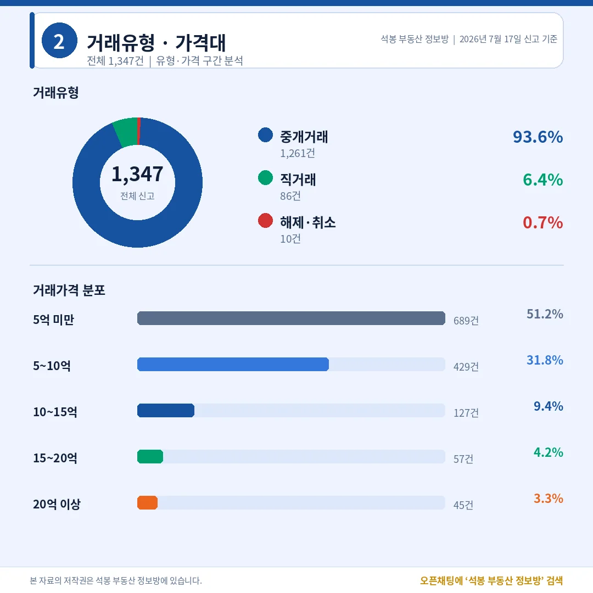
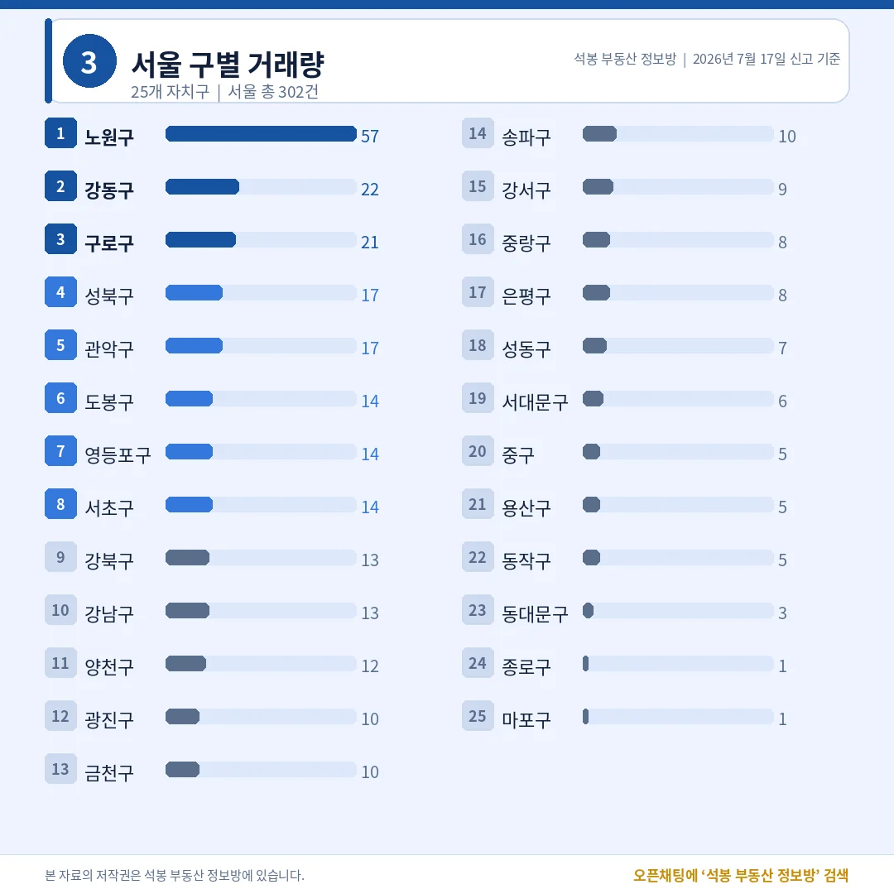
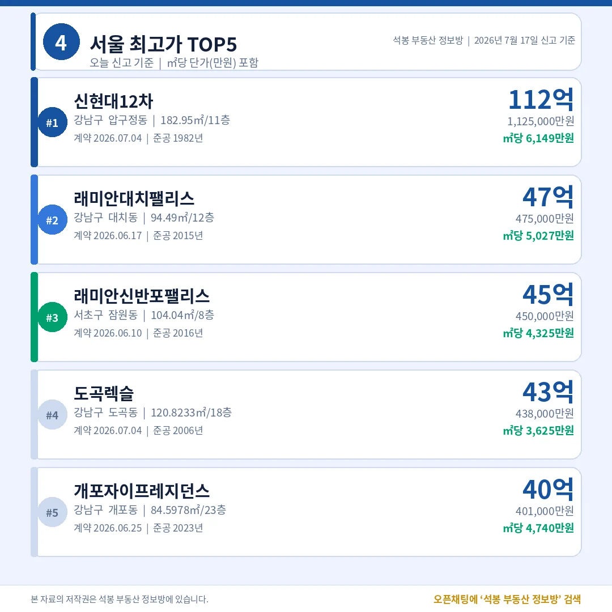
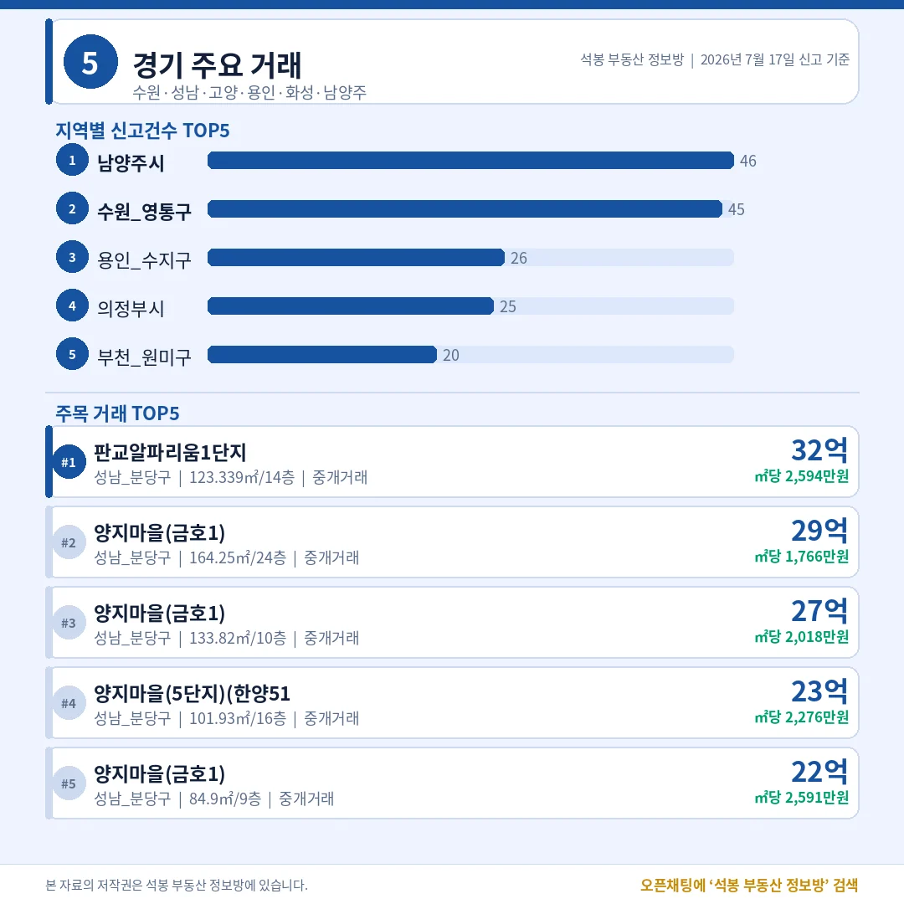
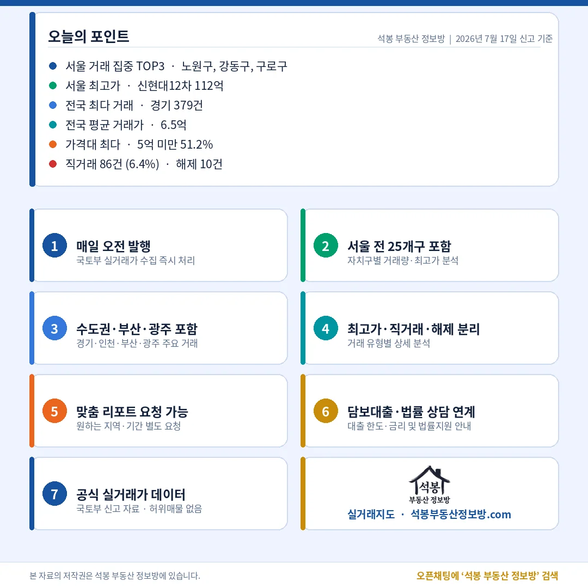
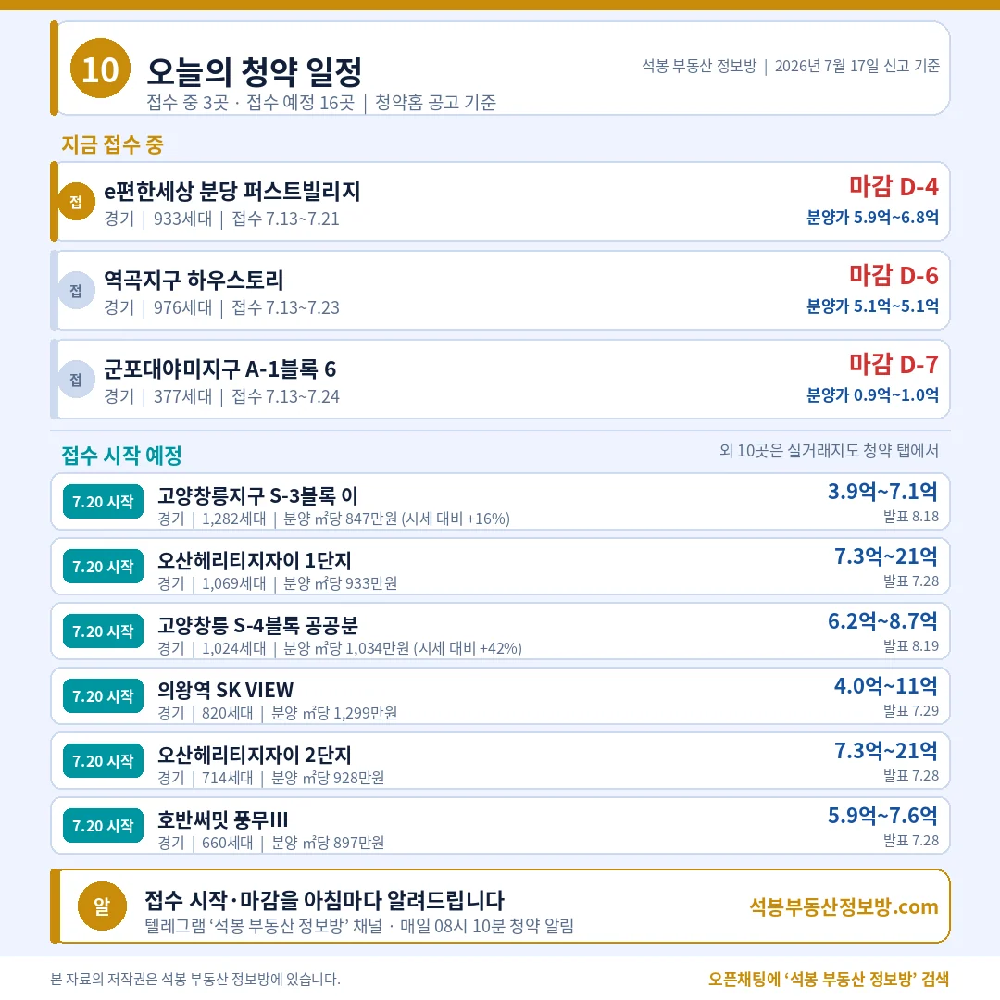

오늘 전국에서 아파트 1,347건이 실거래로 신고됐습니다. 서울 최고가는 압구정 신현대12차 112.5억. 준공 44년 된 재건축 단지가 100억 벽을 훌쩍 넘겼습니다. 그런데 거래량 쪽을 보면 이야기가 완전히 다릅니다. 서울 1위는 노원구 57건, 상계동 한 동네에서만 28건이 손바뀜했습니다.
오늘 시장 한눈에: 5억 미만이 절반, 평소의 시장

거래유형·가격대
전체 1,347건 가운데 중개거래가 1,261건(93.6%), 직거래(중개사 없이 당사자끼리 한 거래)는 86건(6.4%)이었습니다. 해제·취소는 10건(0.7%)에 그쳤습니다. 벌크 신고(기관이 한꺼번에 몰아서 넣는 신고) 같은 왜곡 요인이 없어, 오늘 수치는 시장의 평소 체온에 가깝다고 볼 수 있습니다.
가격대를 보면 5억 미만이 689건(51.2%)으로 절반을 넘겼고, 5~10억이 429건(31.8%)으로 뒤를 이었습니다. 열 건 중 여덟 건 이상이 10억 아래에서 거래된 셈입니다. 10~15억은 127건(9.4%), 15~20억 57건(4.2%), 20억 이상은 45건(3.3%)이었고, 전국 평균 거래가는 6.5억이었습니다. 초고가 거래가 헤드라인을 장식해도 시장의 몸통은 여전히 중저가에 있다는 게 숫자로 확인됩니다.
여기서부터는 회원에게 보여드립니다
카카오 로그인 3초면 전문을 읽을 수 있습니다. 무료입니다.
가입하시면 지역 시장조사 보고서(약식)를 2회 무료로 요청하실 수 있습니다.
이미 회원이면 같은 버튼으로 로그인만 됩니다
어디서 거래됐나: 노원 57건, 상계동에서만 28건

서울 구별 거래량
시도별로는 경기 379건이 전국 1위, 서울이 302건으로 바짝 따라붙었습니다. 부산 103건, 인천 82건, 울산 57건, 경남 55건 순이었고, 수도권(서울·경기·인천) 비중은 56.6%였습니다.
서울 구별 1위는 단연 노원구 57건입니다. 2위 강동구(22건)와 격차가 두 배를 넘습니다. 상계동 28건, 중계동 13건, 월계동 10건으로 노원 세 개 동이 서울 전체의 6분의 1을 차지했습니다. 특정 단지 쏠림 없이 20여 개 단지에 고르게 퍼진 중개거래여서, 일괄 신고가 아니라 실수요 매수세가 넓게 붙은 모습입니다. 구로구 21건, 성북구·관악구 각 17건 등 중저가 지역이 상위권을 채운 반면, 강남구는 13건·서초구는 14건이었습니다.
오늘의 최고가: 신현대12차 112.5억, TOP5 전부 강남·서초

서울 최고가 TOP5
오늘 서울 최고가는 강남구 압구정동 신현대12차 전용 182.95㎡(11층), 112.5억이었습니다. 1982년 준공, 만 44년 된 아파트입니다. ㎡당 6,149만원으로 단가에서도 오늘 1위인데, 압구정 재건축(낡은 아파트를 헐고 새로 짓는 사업) 기대감이 어디까지 와 있는지 보여주는 가격표입니다.
2위부터는 래미안대치팰리스 47.5억(전용 94.49㎡), 잠원동 래미안신반포팰리스 45억(104.04㎡), 도곡렉슬 43.8억(120.82㎡), 개포자이프레지던스 40.1억(84.6㎡) 순이었습니다. 다섯 건 모두 강남구와 서초구, 그중 넷이 강남구입니다. 2023년 준공한 개포자이프레지던스는 국민평형(전용 84㎡)으로 40억을 넘겼습니다. 44년 재건축과 3년차 신축이 나란히 최상단을 채운 하루였습니다.
수도권 밖은 어땠나: 경기·인천·부산·광주

경기/인천/부산/광주
전국 1위 경기(379건)에서는 남양주 46건, 수원 영통구 45건, 용인 수지구 26건 순으로 신고가 많았고, 최고가는 성남 분당 백현동 판교알파리움1단지 32억이었습니다. 눈에 띄는 건 그 다음입니다. 경기 주목 거래 2~5위를 분당 양지마을이 싹쓸이했습니다(29억·27억·23억·22억). 1기 신도시 정비 기대가 걸린 분당 구축 대형 평형에 뭉칫돈이 움직인 하루입니다. 인천(82건)은 부평구 18건에 최고가는 송도자이크리스탈오션 13.3억, 부산(103건)은 북구 15건에 용호동 초고층 더블유가 17.5억으로 지방 최고가를 찍었습니다. 광주(51건)는 서구·광산구 각 13건, 최고가는 봉선동 한국아델리움1단지 15.3억이었습니다. 우리 동네 상세는 카드에서 확인해 보세요.
오늘의 인사이트

마무리(오늘의 포인트)
오늘 신고분은 거래량은 노원, 가격은 압구정으로 요약됩니다. 몸통 쪽에서는 5억 미만이 51.2%, 노원 57건(상계동 28건)을 필두로 구로·성북·관악 같은 중저가 실수요 지역이 서울 거래를 이끌었습니다. 꼭대기에서는 44년 된 신현대12차가 112.5억으로 압구정 재건축의 눈높이를 다시 확인시켰고, 분당 양지마을 대형 평형에는 1기 신도시 정비 기대가 실렸습니다. 직거래 6.4%, 해제 0.7%로 착시 없이 실수요와 정비 기대라는 두 축이 그대로 드러난 하루였습니다.
오늘의 청약 일정: 접수 중 3곳, 월요일에 몰렸다

청약 일정
오늘부터 리포트 마지막 장에 청약 일정이 들어갑니다. 지금 접수를 받는 곳은 세 곳, 모두 경기입니다. 성남 낙생지구의 e편한세상 분당 퍼스트빌리지(신혼희망타운, 933세대)가 21일 마감으로 가장 급하고, 부천 역곡지구 하우스토리(신혼희망타운, 976세대)는 23일까지입니다. 군포대야미지구 A-1블록(377세대)은 6년 분양전환 공공임대로, 24일까지 접수합니다.
다음 주 월요일(7월 20일)에는 접수 시작이 몰려 있습니다. 고양창릉 공공분양 두 개 블록(2,306세대)을 비롯해 오산 헤리티지자이 1·2단지, 의왕역 SK VIEW, 김포 호반써밋 풍무Ⅲ 등 전국 12곳이 한꺼번에 문을 엽니다. 단지별 분양가와 주변 시세 비교는 카드와 실거래지도 청약 탭에 정리해 뒀습니다.
원자료: 국토교통부 실거래가 공개시스템(2026년 7월 17일 신고분) · 편집·제작: 석봉 부동산 정보방 · 본 자료는 정보 제공 목적이며 투자 권유가 아닙니다.